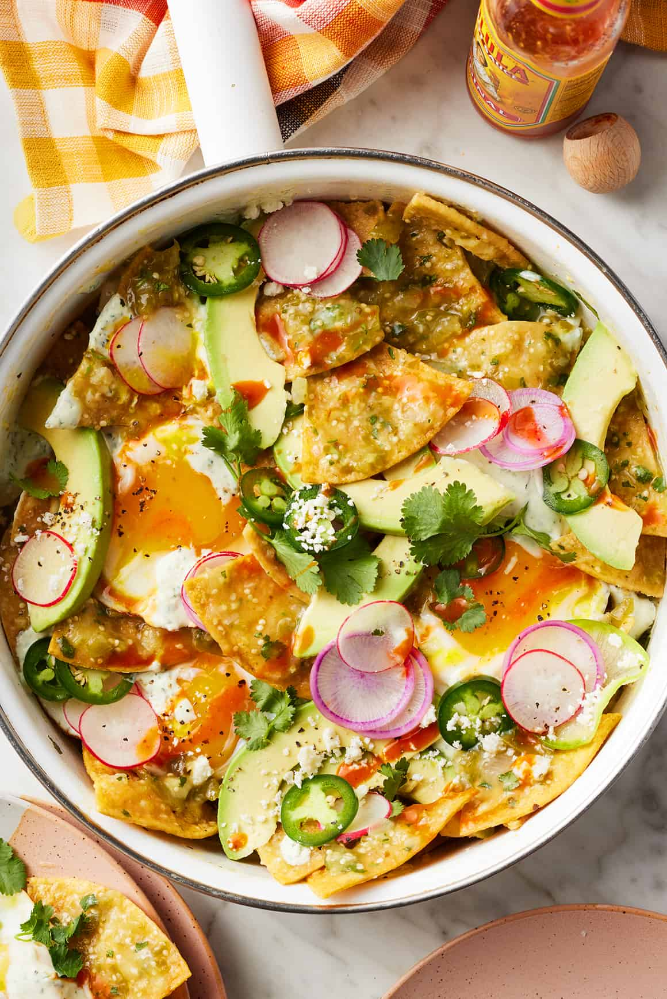

Chilaquiles

Description
Tortilla chips or fried stale tortillas topped with a multitude of toppings including fried eggs, salsa
crema, guacamole, pico de gallo, cheese and so much more. The possibilities are endless!
Chilaquiles are a traditional Mexican dish, very similar to migas, that are intended to use up stale tortillas and leftover ingredients.
They can be served for breakfast or brunch, or with heartier toppings, even lunch and dinner!
Ingredients
- 16 oz jarred or homemade salsa roja or salsa verde
- 1 cup water or vegetable broth
- 6 oz tortilla chips or fried tortillas, thick enough to hold toppings
- Cilantro Lime Crema to drizzle
- 1 sliced avocado or 1 cup guacamole
- 2 thinly sliced radishes
- 1 jalapeño, thinly sliced
- Cotija or similar cheese
- Fresh cilantro to garnish
- Salt and pepper to taste
These are just some suggested toppings, you can vary it however you want!
Steps
- Simmer salsa and water in a skillet for 5-10 minutes
- Fold in and coat chips
- Finish with toppings and garnishes
- Enjoy immediately!